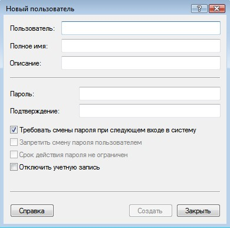
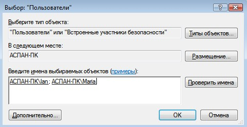
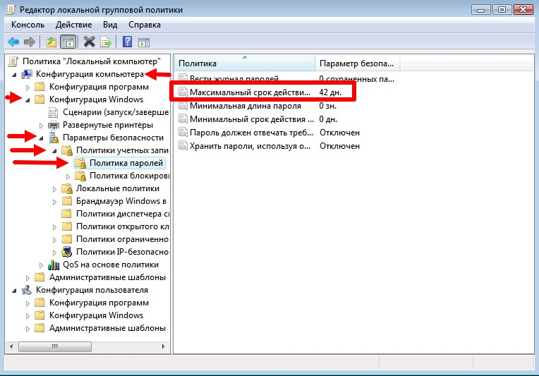

Управление пользователями в Windows

Содержание
1. Введение
Учетная запись – это совокупность данных о пользователе, необходимая для его аутентификации и предоставления доступа к его личным данным и настройкам. Таким образом, учетная запись состоит из имени пользователя и пароля (либо иных способов аутентификации). Пароль зачастую зашифрован или хэширован. Учетная запись может хранить фотографию пользователя или иное изображение, учитывать давность различные статистические характеристики поведенияпользователя в системе.
Не редко за одним компьютером работают несколько пользователей. В Linux управление пользователями удобнее производить в командной строке. В группе семейств операционных систем Microsoft такая возможность так же присутствует, как и GUI (Graphical User Interface).
Управление учетными пользователями является одной из основных обязанностей системного администратора. Очень удобно объединять пользователей в группы, редактировать их права доступа в зависимости, например, от должности в компании. От этого напрямую зависит обеспечение безопасности информационной системы.
2. Управление учетными записями через lusrmgr.msc
Сразу после установки Windows мы начинаем работу с правами Администратор. Данные права в ОС позволяют, например, создавать, изменять, удалять иные учетные записи, выполнять любые операции по настройке системы.
Для управления учетными записями используется оснастка lusrmgr.msc (рис. 1). Мы также можем открыть её, введя название в поле команды «Выполнить», либо же во внутрисистемный поиск.

Рис. 1. Окно lusrmgr.msc
Для того, чтобы создать учетную запись, нужно сделать следующее:
- Перейти в папку «Пользователи» (рис. 2).
- В строке меню выбираем «Действие», затем «Новый пользователь».
- Обязательно заполняем поле «Пользователь», остальное при необходимости (рис. 3).

Рис. 2. Пользователи в ОС
Рис. 3. Создание пользователя
Группа пользователей — это совокупность учетных записей пользователей, которые имеют одинаковые права и разрешения безопасности. Учетная запись пользователя должна быть членом хотя бы одной группы пользователей.
Разные пользователи имеют разные потребности, администратор может распределить нужные разрешения и запреты. Если у нас много пользователей, то удобно распределить права не индивидуально, а по группам пользователей. В Windows есть несколько встроенных групп: Администраторы (Administrators), Пользователи (Users), Опытные пользователи (Power Users), Операторы архива (Backup Operators), Гости (Guests), Пользователи удаленного рабочего стола, DHCP Administrators, DHCP Users и WINS Users. Мы также можем создать свою группу. Для этого:
- Переходим в папку «Группы» (рис. 4).
- В строке меню выбираем «Действие», затем «Создать группу».
- Обязательно заполняем поле «Имя группы», остальное при необходимости (рис. 5.1 - 5.2).

Рис. 4. Список всех групп

Рис. 5.1. Создание группы
Рис. 5.2. Добавление пользователей в группу
Просмотреть, к каким группам принадлежит пользователь можно в папке «Пользователи», нажав правой кнопкой мыши на пользователя, затем выбрав «Свойства», «Членство в группах». Если мы перейдем во вкладку «Общие», то сможем управлять паролем пользователя, а также, при необходимости, отключить учетную запись (рис. 6).
Рис. 6. Управление во вкладке «Общие»
Администратор также может задавать ограничения по времени действия пароля, для этого необходимо воспользоваться оснасткой gpedit.msc. Далее перейти в «Конфигурация компьютера», «Конфигурация Windows», «Параметры безопасности», «Политика учетных записей», «Политика паролей» (рис. 7).
Рис. 7. Изменение времени действия пароля
3. Управление учетными записями через cmd
Как и говорилось ранее, управление учетными записями мы можем производить через командную строку. Для начала мы пропишем команду whoami и whoami /user (рис. 8). Первая отображает сведения о текущем пользователе, вторая дополнительно показывает SID (security identifier). SID - это структура данных переменной длины, которая идентифицирует учетную запись пользователя, группы, домена или компьютера. Последние 4 цифры указывают на относительный идентификатор безопасности объекта (RID). 3 набора цифр перед RID это как раз и есть SID.

Рис. 8. whoami и whoami /user
Для дальнейшего управления учетными записями нам понадобиться команда net user. С помощью неё мы сможем:
- добавить учетную запись (net user NAME PASSWORD /ADD) (рис. 9.1);
- добавить пароль учетной записи (net user NAME PASSWORD) (рис. 9.4);
- переименовать учетную запись (wmic useraccount where name='NAME' rename ‘NEWNAME’) (рис. 9.2);
- просмотреть информацию об учетной записи (net user NAME) (рис. 9.3);
- изменить пароль учетной записи (net user NAME NEW_PASSWORD);
- отключить учетную запись (net user NAME /active:no);
- удалить учетную запись (net user NAME /delete) (рис. 9.5).

Рис. 9.1. Добавление учетной записи

Рис. 9.2. Добавление учетной записи
Рис. 9.3. Добавление учетной записи

Рис. 9.4. Добавление пароля к учетной записи

Рис. 9.5. Удаление учетной записи
Для работы с группами необходимо использовать команду net localgroup. Например, с помощью неё мы можем:
- вывести список всех локальных групп (net localgroup);
- добавить локальную группу (net localgroup GROUPNAME /add);
- добавить учетные записи существующих пользователей в группу (net localgroup GROUPNAME USERNAME1 USERNAME2 /add /domain);
- вывести список пользователей локальной группы (net localgroup GROUPNAME).
4. Заключение
Таким образом, ознакомившись с основами управления пользователями в операционной системе Windows можно сделать следующие выводы:
Создание учетной записи, изменение пароля учетной записи и многие другие действия можно выполнять как через различные оснастки, так и через командную строку. Во втором случае мы можем использовать, например, команду net user. Также и с изменениями групп, они тоже могут выполняться двумя вышеописанными способами.
Для обеспечения информационной безопасности необходимо сортировать их учетные записи по группам, где можно вводить ограничения их прав (например, просмотр определенных папок).
Долганов Ян Львович
Студент по направлению “Прикладная информатика”
Мои научные интересы относятся к области администрирования ОС и различных языков программирования.